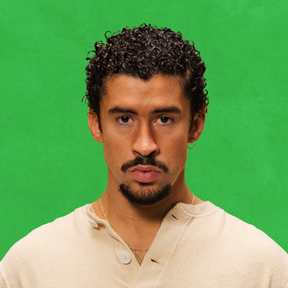
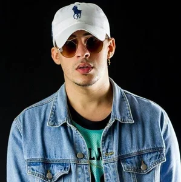
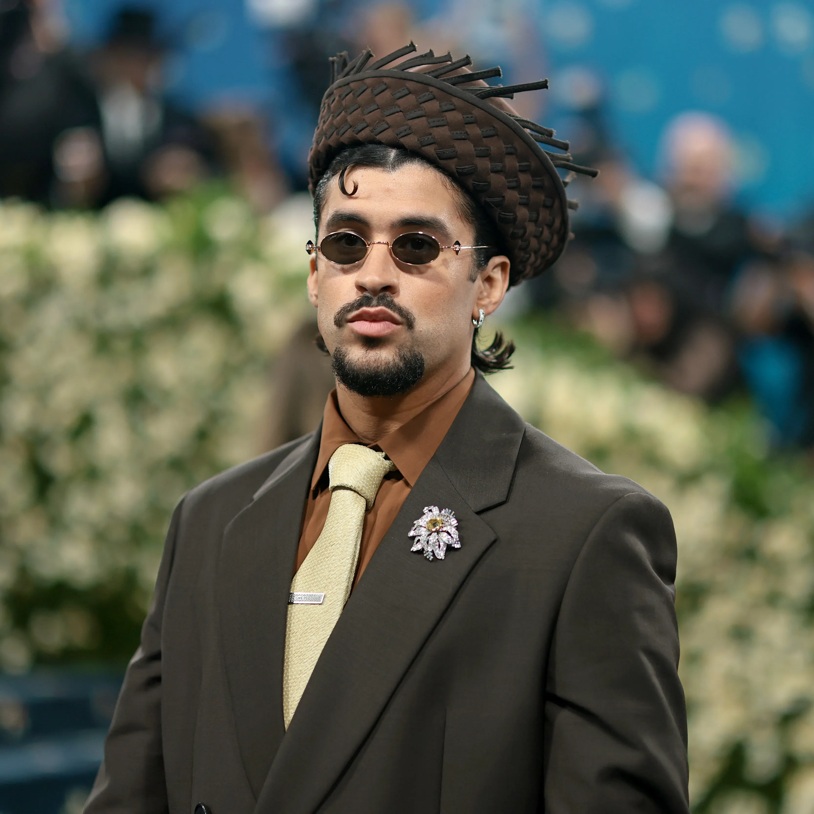
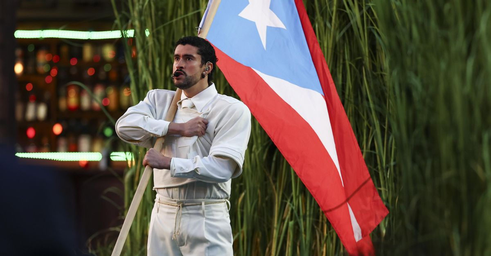
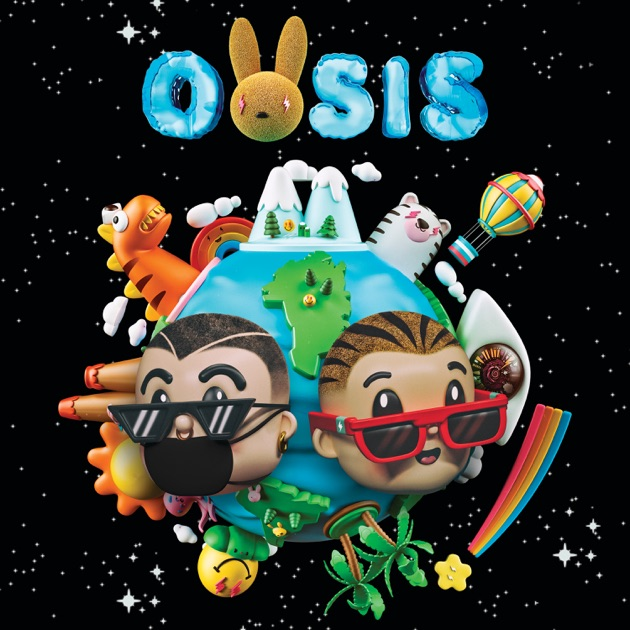
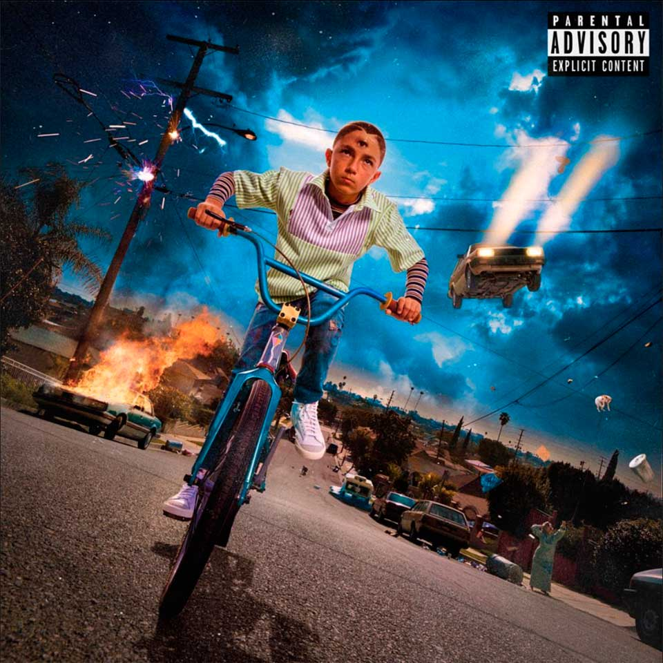
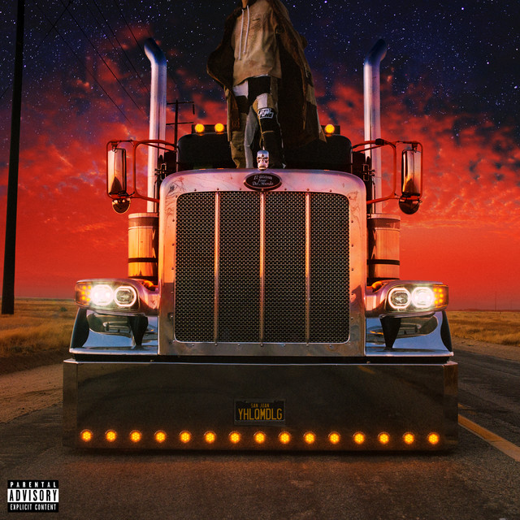
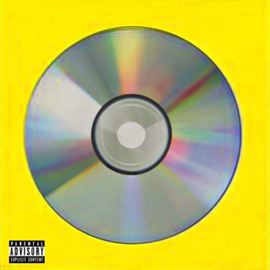
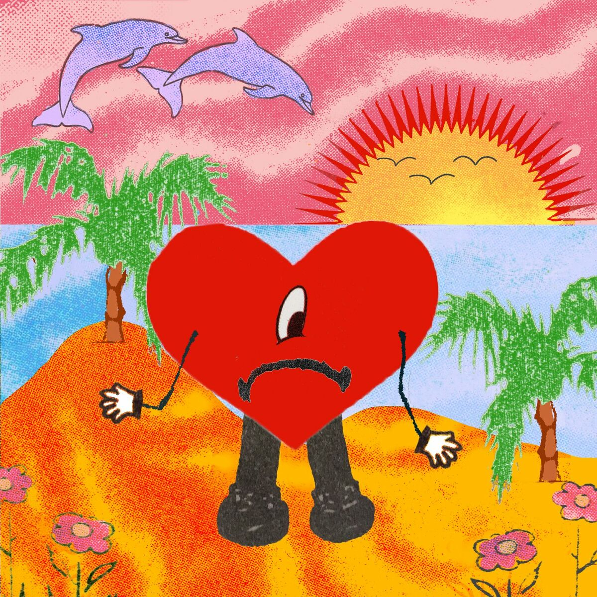
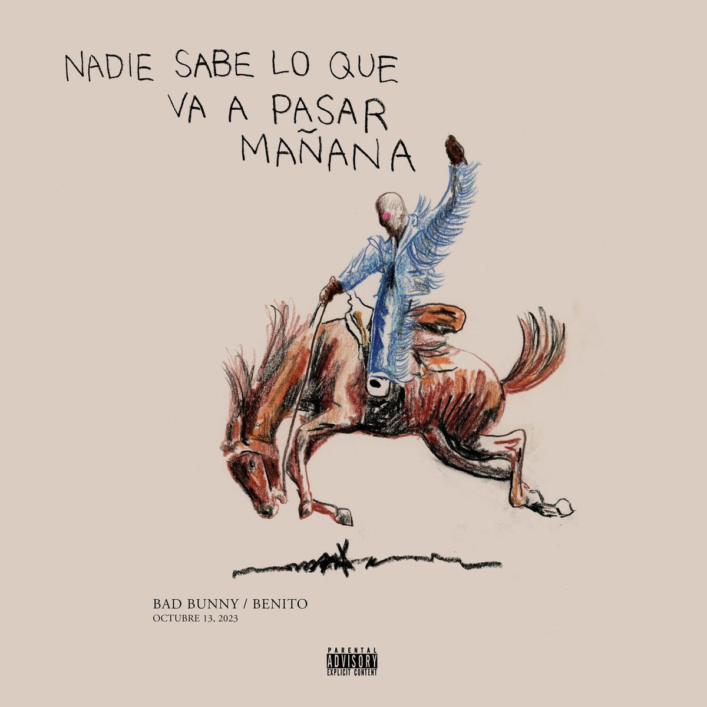

Blog Bad Bunny

BIOGRAFÍA
Benito Antonio Martinez Ocasio, mejor conocido como "Bad Bunny" nace el 10 de marzo de 1994 en Bayamón, Puerto Rico, para después ser criado en el barrio Almirante Sur en Vega Baja.
Benito creció en un hogar de clase media baja en Vega Baja, hijo de un conductor de camiones, Benito Martínez, y una maestra de inglés, Lysaurie Ocasio. Tiene dos hermanos menores, Bernie y Bysael Martínez. Desde muy pequeño mostró un gran interés por la música. A los 5 años, cantaba en el coro de la iglesia católica local, donde permaneció hasta los 13. Su primer gran contacto con la música urbana fue al recibir un álbum de Vico C como regalo de Navidad. Creció escuchando una mezcla de salsa, merengue, baladas y reggaeton de artistas como Daddy Yankee y Héctor Lavoe, lo que más tarde influiría en su sonido y forma de hacer música.
INICIOS DE SU CARRERA
Mientras estudiaba y trabajaba como empaquetador en un supermercado Econo, Benito comenzó a crear su propia música y a publicarla de forma independiente en la plataforma SoundCloud alrededor de 2013 . Su gran oportunidad llegó en 2016 cuando su canción "Diles" llamó la atención del productor DJ Luian, quien lo fichó para su sello Hear This Music, discográfica que acobijaba a gigantes de la época como Arcángel, Anuel AA, De la Ghetto y Ozuna . Poco después, lanzó "Soy Peor" en 2016, un tema que lo posicionó como un pionero de la nueva escena del trap latino y le dió un reconocimiento masivo .

Bad Bunny 2016
EL DESPEGUE
A partir de "Soy Peor", su carrera se disparó con una serie de colaboraciones estratégicas que lo llevaron a lo más alto de las listas: "Ahora Me Llama" con Karol G, "Mayores" con Becky G, "Sensualidad" con J Balvin y Prince Royce, y el remix de "Te Boté" con Ozuna y Nicky Jam, entre otras.
El año 2018 fue clave para su salto internacional. Su colaboración con Cardi B y J Balvin en "I Like It" llegó al número 1 del Billboard Hot 100, demostrando que se podía conquistar el mercado anglo sin necesidad de cantar en inglés . Ese mismo año, colaboró con nada menos que Drake, un gigante de la música gringa en ese entonces, en el tema "Mía"
LA CONSAGRACIÓN DE SU MÚSICA
Frustrado porque su sello no le permitía lanzar un álbum completo, Bad Bunny se independizó y, en la Nochebuena de 2018, sorprendió a todos con su primer álbum de estudio: "X 100PRE" . El disco fue un éxito de crítica, alabado por su mezcla de trap, pop-punk y R&B, y ganó un Latin Grammy .
A partir de entonces, su carrera fue una sucesión de hitos sin precedentes:
2020: Lanzó tres álbumes en un solo año: "YHLQMDLG" (Yo Hago Lo Que Me Da La Gana), "Las que no iban a salir" y "El Último Tour del Mundo". Este último se convirtió en el primer álbum íntegramente en español en alcanzar el #1 en la lista Billboard 200 . Ese año, fue el artista más escuchado del mundo en Spotify por primera vez .
2022: Lanzó "Un Verano Sin Ti", un álbum que exploraba ritmos tropicales como el merengue, la cumbia y el dembow. El disco fue un fenómeno cultural masivo, rompió todos récords de streaming, lo nombraron por tercer año consecutivo como el artista más escuchado a nivel global en Spotify y recibió una nominación al Grammy como Álbum del Año, otra primicia para un disco en español. Este álbum sería la explosión que Bad Bunny necesitaba para posicionarse como los artistas más importantes de la historia.

Bad Bunny 2022
EL ICONO GLOBAL
Para este punto, Bad Bunny ha transcendido como artista a convertirse en un ícono mundialmente reconocido, y que su influencia va mucho más allá de los escenarios musicales, como por ejemplo:
Cine y Televisión: Ha incursionado en el cine con papeles en películas de alto perfil como Rápidos y Furiosos 9, Bullet Train (junto a Brad Pitt), Cassandro y Happy Gilmore 2.

Bad Bunny en Happy Gilmore 2
Moda e Identidad: Se ha convertido en un icono de la moda, desafiando los estereotipos de género con su estilo arriesgado. Ha usado faldas, uñas pintadas y vestidos en portadas de revistas como Vogue y en eventos como la MET Gala, enviando un poderoso mensaje de libertad y rompiendo con el machismo tradicional del género urbano.

Bad Bunny en el MET Gala
Voz Social y Política: El artista ha utilizado su plataforma para alzar la voz en temas que le importan. Ha mostrado su apoyo a Puerto Rico en momentos difíciles y ha defendido los derechos de la comunidad LGTBIQ+ y de los inmigrantes . En 2025, mostró su preocupación por la seguridad de sus fans latinos ante posibles redadas del ICE, llegando a considerar no presentarse en ciertos lugares de Estados Unidos.
LA LEGENDARIA ACTUALIDAD
En 2025, lanzó "Debí Tirar Más Fotos", un álbum profundamente personal que es una carta de amor a Puerto Rico, fusionando el reguetón con géneros autóctonos como la salsa y la plena. Este álbum fue un golpe en la nostalgia de cualquier latinoamericano que en algún momento ha vivido algunas de las vivencias que lo caracteriza de ser un latino, causando un impacto sin precedentes no solo para el público latinoamericano, si no para el público global en general.
La consagración definitiva llegó en febrero de 2026, cuando este nuevo álbum le valió el premio Grammy al Álbum del Año, siendo la primera vez que un disco completamente en español gana esta categoría principal . En su discurso, aprovechó para lanzar un potente mensaje contra las políticas migratorias: "Fuera ICE. No somos salvajes, no somos animales... Somos humanos" . Días después, el 8 de febrero de 2026, coronó una década de éxitos al convertirse en el primer artista latino en encabezar en solitario el espectáculo de medio tiempo del Super Bowl, con una presentación íntegramente en español que celebró sus raíces boricuas .

Bad Bunny en el Super Bowl
Bad Bunny pasó de ser un joven que cantaba en el pasillo de un supermercado a convertirse en un fenómeno global que ha roto barreras de idioma y género, demostrando que la autenticidad y el orgullo por las propias raíces pueden conquistar el mundo.
Click para saber incluso más acerca del artista.ÁLBUMES

Oasis

( 2019 )Canción #1 del álbum: La Canción (con J Balvin)
Álbum Completo en Spotify
Yo Hago Lo Que Me Da La Gana

( 2020 )Canción #1 del álbum: Safaera (Con Jowell & Randy y Ñengo Flow)
Álbum Completo en Spotify
El Último Tour del Mundo

( 2020 )Canción #1 del álbum: DÁKITI (Con Jhay Cortez)
Álbum Completo en Spotify
Las Que No Iban a Salir

( 2020 )Canción #1 del álbum: Cómo Se Siente Remix (Con Jhay Cortez)
Álbum Completo en Spotify
Un Verano Sin Tí

( 2022 )Canción #1 del álbum: Me Porto Bonito (Con Chencho Corleone)
Álbum Completo en Spotify
Nadie Sabe Lo Que Va a Pasar Mañana

( 2023 )Canción #1 del álbum: Monaco
Álbum Completo en Spotify